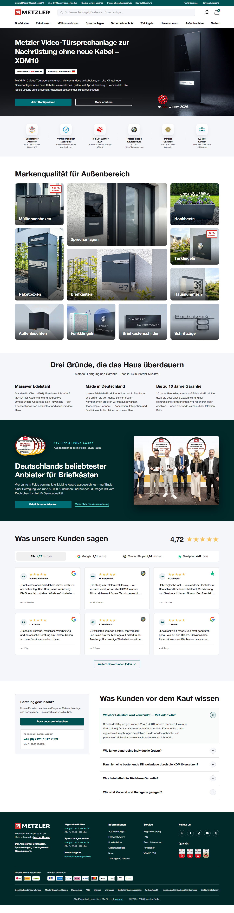

Rebuilding a premium e-commerce homepage around intent
Metzler GmbH
A research- and audit-driven redesign. I surfaced friction from usability tests, competitive analysis and an AI audit, prioritised the highest-impact fixes, and shipped a tokenised, dev-ready front end – a benefit-first hero, a consolidated trust strip, and the configurator finally given a clear entry point.
- Usability testing
- Competitive analysis
- AI audit
- Design system
- Front-end handoff